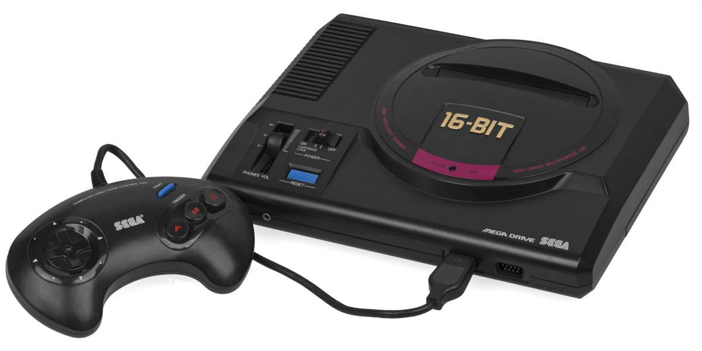
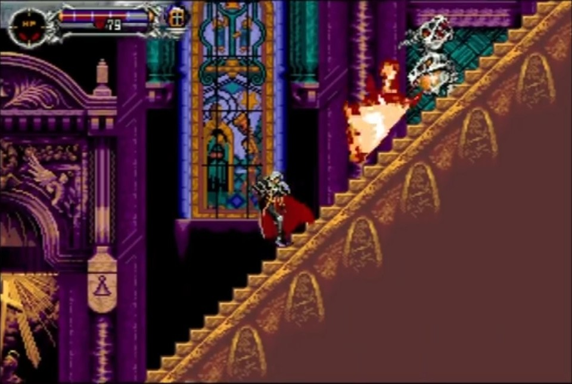

from a PlayStation disc to Alucard walking on a Mega CD
So, which console?
My first question that night, at 11 p.m. on October 17, was about the Mega Drive. Now that someone had fully decompiled Symphony of the Night, could it be ported?
The answer was no. Without its videos, voice clips and streamed music, the game still weighs about 46 MB. A Mega Drive cartridge doesn't come close, not without cutting the game to pieces.

The Mega Drive. Symphony of the Night, stripped of videos and voices, is still about 46 MB. Photo: Evan-Amos, public domain, via Wikimedia Commons.

A word about Pigsy
Someone is already doing it the hard way. Pigsy, of Pigsy's Retro Game Dev Tutorials, is building his own Symphony of the Night for the Mega Drive, and it's a different project from mine: a new game written from scratch for the cartridge, split into stages. And it looks fantastic. Look at the backgrounds in his Alchemy Laboratory. Look at that Royal Chapel staircase, with a Bone Pillar breathing fire down at Alucard.

Pigsy's Alchemy Laboratory. Screenshot from Pigsy's demos.

The Royal Chapel stairs, Bone Pillar included. Screenshot from Pigsy's demos.
Unlike him, I start this project with the naivety of a kid who jammed a Mega Drive cartridge into an ISA slot. I want to see if the game runs or, at least, how far the Mega CD can go with this game. The castle itself: every room connected, the inverted castle, the equipment, the familiars. That meant a bigger machine.
I also want a port with a few things the original never got. Remember the menu Igarashi had no time to finish? To me, finishing that design means extra care for everything that lives inside the menu: customizing your familiars, customizing the menu itself.
As for the balance between fidelity and change, the rule is simple. This is a port first, and it should look and play the way you remember it. But I couldn't resist hiding a few Easter eggs as a tribute to Sega and to the Mega CD itself. Those are for a later post.
So, Mega CD. Same video chip as the Mega Drive, but with a CD drive, a second processor and extra memory. And the original game is already split into pieces that load one area at a time, which is exactly how a CD system wants to work.

The Mega-CD in its original Japanese box. It goes under the Mega Drive, as the drawing on the left shows; in North America it was sold as the Sega CD. Photo: Sega Retro (Mega-CD HAA-2910 box).
Eleven minutes after the first question, I asked where to start. Half an hour later, Claude Code was installed. Then it refused to start.
PS C:\Users\pagan\desktop\SOTN CD\Castlevania - Symphony of the Night> claude
claude : The term 'claude' is not recognized as the name of a cmdlet,
function, script file, or operable program.A promising beginning.
The next evening I was frustrated. I had spent hours on it and had nothing playable. On my Mega Man X3 port, X was controllable almost right away. So I moved the work into a regular Claude chat and kept going from there.
By 9:30 p.m. the disc booted on a Mega CD emulator, loaded an image from the CD, played an audio track, and then did the thing I actually cared about: Alucard, running the original game code, walking down a real Castle Entrance hallway. Real sprites, original collision, working stairs. Not long after, zombies rose out of the floor, walked at him and died to his bare fists.
2 processors, 2 jobs
The Mega Drive's main processor runs at about 7.67 MHz. The PlayStation's runs at about 34 MHz. Asking the first one to run the second one's game and also draw the screen is not a plan.
The Mega CD adds a second processor, at 12.5 MHz. So the port splits the work. The second processor runs the game: Alucard, enemies, collision. The main one only draws what it's told. They trade notes once per frame through a shared block of memory. The price is one frame of delay between the game deciding something and the screen showing it.

Inside the Mega CD. The chip marked HD68HC000 is the second processor: another 68000, this one at 12.5 MHz. Photo: Evan-Amos, public domain, via Wikimedia Commons.

My verdict at 8:40 p.m., after trying the controls: "Movement and physics are great, keep going." (Translated from Portuguese.)
The number
12 commits on day one. Two phases of the original plan closed, and the third already moving.
Next on the log, a detour: what AI can't do in this port. After that, day 2: candles, explosions, a HUD, and the castle music pulled straight from the original disc.
I decide what the port should be, draw and pick colors, and test every build. The code, tools and measurements are written by Claude (Anthropic's AI). This post was drafted by Claude from my chat messages and the project's commit history, and reviewed by me.